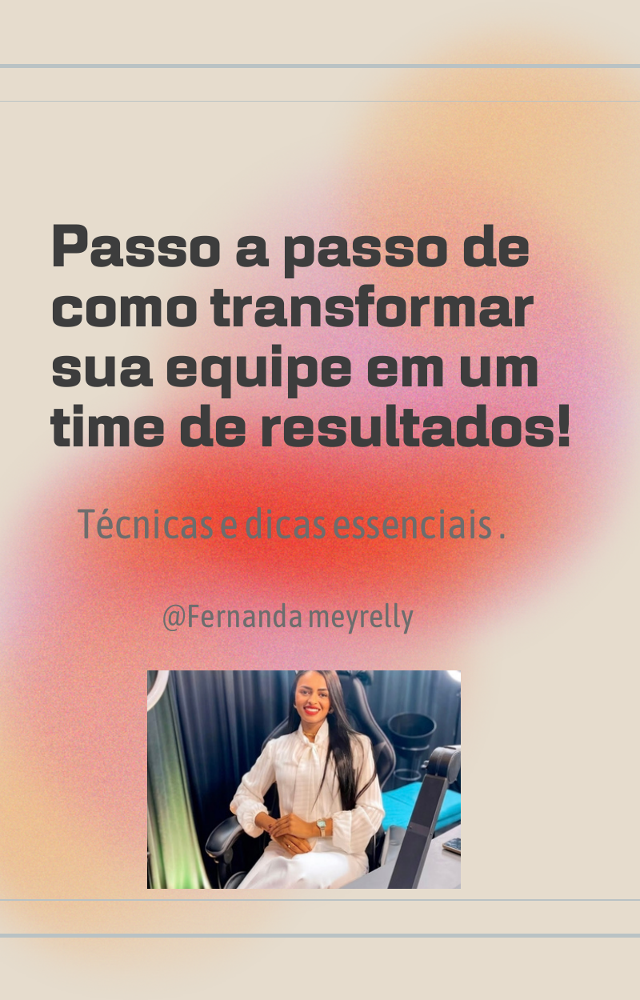

Objetivos claros
Todos entendem o que precisa ser feito, como será entregue e qual resultado deve ser alcançado.
Clareza, método e consistência para desenvolver pessoas, fortalecer líderes e construir uma equipe mais produtiva, comprometida e preparada para crescer.
Resultados consistentes não acontecem por acaso. Eles são consequência de pessoas alinhadas, processos claros e uma liderança capaz de transformar talentos individuais em força coletiva.
Todos entendem o que precisa ser feito, como será entregue e qual resultado deve ser alcançado.
Alinhamentos frequentes reduzem ruídos, retrabalho e conflitos desnecessários.
Relações mais seguras aumentam a colaboração, a autonomia e o comprometimento.
O time deixa de apenas executar tarefas e passa a assumir compromisso com o resultado.
Uma equipe trabalha junta.
Uma metodologia que conecta cultura, comportamento, comunicação e responsabilidade para gerar crescimento sustentável.
Começar essa transformação →Quando a equipe entende por que faz, encontra motivação para entregar melhor.
O que fazer, como fazer, quando entregar e como o resultado será avaliado.
Reuniões objetivas, escuta ativa e alinhamentos frequentes.
Coerência, segurança psicológica e relações que fortalecem a colaboração.
Cada pessoa assume compromisso não apenas com a tarefa, mas com o valor entregue.

O líder deixou de ser apenas quem manda. Hoje, precisa inspirar, dar direção, desenvolver pessoas, resolver conflitos e criar segurança para que a equipe tenha autonomia.
As pessoas não sabem exatamente o que precisam entregar.
Informações desencontradas criam retrabalho e insegurança.
Controlar tudo elimina autonomia e enfraquece o crescimento do time.
Sem direção, o colaborador não sabe o que manter, ajustar ou desenvolver.
Construa uma liderança mais forte, uma equipe mais madura e resultados que se sustentam.
Falar com Fernanda no WhatsApp